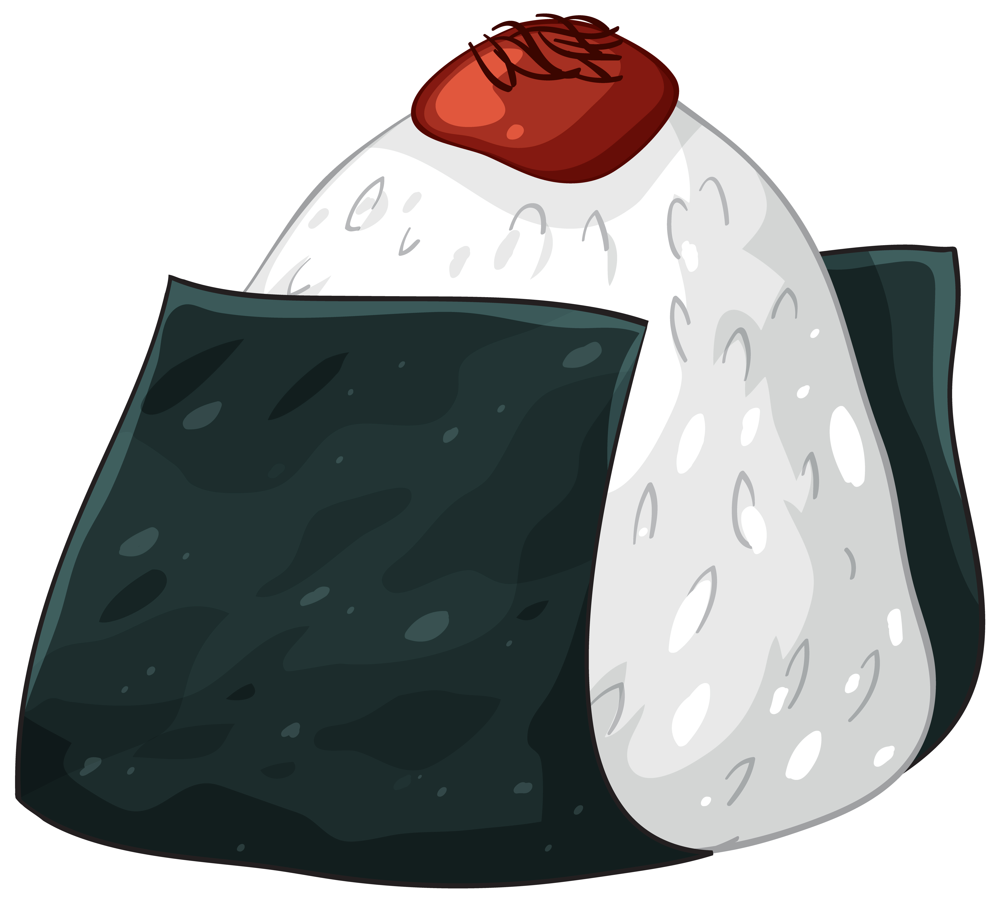

>Готовьте онигири из свежего, ещё тёплого риса. Так сушёные водоросли нори смогут забрать часть влаги и не быть слишком ломкими, когда вы будете заворачивать в них онигири. Тёплый рис более податлив и хорошо лепится. Кстати, здесь рассказали, как правильно варить рис. Но есть важный момент. Считается, что водоросли в онигири должны хрустеть и создавать контраст с нежной, даже местами вязкой мякотью. Поэтому если не планируете сразу съесть или подать к столу онигири, не делайте их заранее. Просто подготовьте рис и начинку и быстро накрутите онигири непосредственно перед подачей на стол.
Если готовите сами, попробуйте разные варианты: и побольше начинки, и поменьше. Даже рыбу можно брать разную.